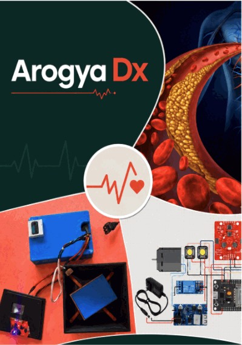

Aadya Kanchan
I am a high school student in Bengaluru, who is very curious and observant of the surroundings. Most of what I have built is based on some of the real-world problems that I have personally come across and went deep into finding out, the source of the problem and the possible solutions. My innovation journey started when I opened the tap and nothing came out. This was the first time for me and I realised that I had taken water for granted, probably others also might be doing the same. This was a spark that moved me to explore more and more and the journey is still continuing.
I have built 3 working prototypes and 1 ground water analysis so far. Please enjoy my journey.
Project / AquaFlux
AquaFlux
AquaFlux is a passive, vortex-driven drainage insert that fits into existing surface drain inlets and speeds water capture through geometry alone.

Project / NIRI
NIRI
NIRI is a patented, IoT-enabled mechatronic water conservation system that cuts wastage through intelligent flow regulation, real-time leak detection, automatic shut-off, and behavior-driven nudges.


Project / Arogya
Arogya Dx
Optical data was collected using a TCS34725 RGB sensor and an AS7265 TRIAD spectral sensor (410–940 nm, 18 channels).

Project / GIS
GIS Groundwater
541.31 km², with static water levels measured at 10 sampling locations during the 2024 pre- and post-monsoon periods.